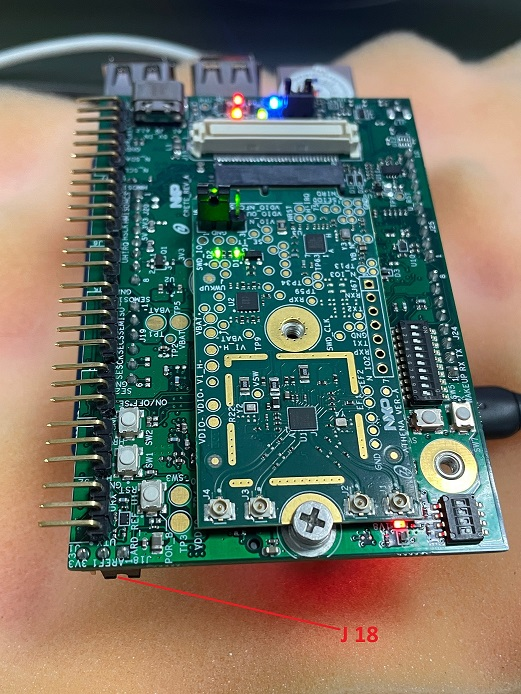
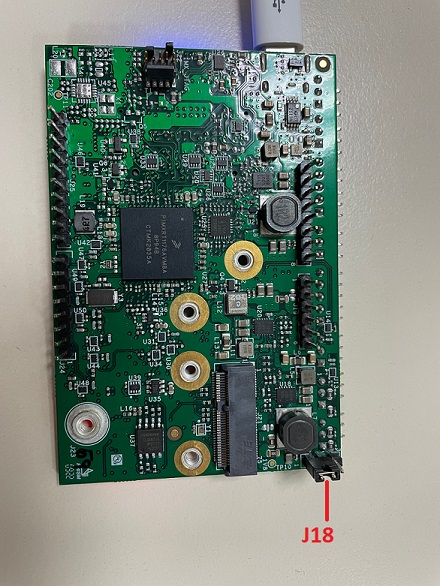
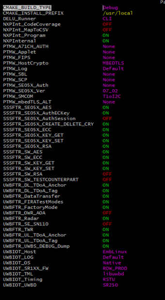

3.5. Raspberry PI + Crete CMake Project
3.5.1. Crete Board with HW modifications
Following HW modifications are required in crete board version 1 to connect with Athena/Artemis board
- Default State:
- R316, R337 -> SI5351_SCL & SI5351_SDA -> DNPR33 -> U21 IO EXP Switch EN pin -> 0RR251 -> U21 IO EXP Switch EN pin -> 470R
- Arduino Interface:
- R311, R320 DNP (Temp. Sensor VDD, 1V024 Ref VDD)R120, R112 (H_I2C_SCL & H_I2C_SDA) R91, R100 (CX_I2C_SCL & CX_I2C_SDA) R345, R326 (NFC_SCL & NFC_SDA) DNPJ18 - 3 Pin Header Place 2 pin jumper on pins 1 & 2
- Reset pin modification for GPIO Expander U25
- RESET pin of U25 needs to be connected to VDDIO_IO_EXP
Note
Crete version 2 board requires no modifications. Only the J18 jumper pins 1 & 2 need to be connected.
Crete Board:
Top SideBottom Side
3.5.2. Install Linux
To install the Raspberry Debian OS, Raspberry Pi Imager can be used.
From this UI, we can install the RASPBERRY PI OS inside SDCard.
As soon it is done, SD card can be inserted in Raspberry PI and platform can be booted.
3.5.3. Assembling the Boards
The Crete board featuring an Arduino interface, it cannot be directly plugged to the Raspberry Pi.
An OM-SE050RPI adapter can then be used to stack the boards together as shown in below picture.
3.5.4. Enable SPI & I2C
To make the Raspberry Pi running with the crete board the SPI interface must be enabled on Raspberry Pi.
This can be done using following command:
sudo raspi-config
It will open a UI where configuration needs to be changed.
First of all, select Interface Options:
Then select SPI interface:
Then confirm SPI pin enable change
Similar way perform Steps e to f with I2C interface option to enable I2C.
3.5.5. Software Configuration
- Toolchain
- To build the UWB stack cmake toolchain as well as a few components are requiredOn Raspberry Pi installation is done using below command:
apt-get install cmake cmake-curses-gui cmake-gui libssl-dev libsystemd-dev flex bison
- Kernel headers
- To build and install the libuwbd kernel driver, kernel module headers are required.On Raspberry Pi the following below procedure allows preparing the kernel module build:
sudo apt update -y sudo apt install flex bison -y sudo rpi-update sudo reboot
As Raspberry Pi needs to be rebootedsudo wget https://raw.githubusercontent.com/notro/rpi-source/master/rpi-source /usr/bin/rpi-source
Note : if above command gives error then please try this command :sudo wget https://raw.githubusercontent.com/RPi-Distro/rpi-source/master/rpi-source -O /usr/local/bin/rpi-source
Next Stepssudo chmod +x /usr/bin/rpi-source -q --tag-update rpi-source sudo apt-get install libncurses5-de
Note : The menuconfig tool requires the ncurses development headers to compile properly.These can be installed with the above commandsudo reboot
As Raspberry Pi needs to be rebooted.
3.5.6. Libuwbd kernel driver
- Adding definition to the device-tree
- Before installing the libuwbd kernel driver, the related definition must be added to the platform device-tree.For Raspberry Pi platform this can be used using device tree overlay following below procedurego into the sr2xx/src folder [uwbiot-top/ext/TML-libuwbd/sr2xx/src] of the SR250Build the device-tree overlay with the command:
dtc -@ -I dts -O dtb -o uwb_overlay.dtbo uwb_overlay.dts
Then add the UWB definition to the device tree with this commandsudo dtoverlay -d . uwb_overlay
Building the kernel driver
To build and install libuwbd kernel module driver follow below steps
go into src folderCompile the module thanks to make commandmakeThis will generate sr2xxDriver.ko object file
Loading the kernel mode driver
On the Raspberry Pi the libuwbd kernel driver can be loaded using following commandsudo insmod sr2xxDriver.koWhen loaded to the kernel, this driver exposes the interface to the UWB controller through the device node named /dev/sr2xxModify the permission of this device using following commandsudo chmod 777 /dev/sr2xxWe are also using the i2c-1 device so also modify the permissions using following commandsudo chmod 777 /dev/i2c-1
3.5.7. Build the UWB stack for the kernel mode driver
To build the UWBIOT library including the demo applications:
Unzip the SR250 UWBIOT Linux release packagego into uwbiot-top folderrun python scripts/create_cmake_projects.pywhen done, go into newly generated ../_uwbiot-top_build/uwbiot-top-sr2xx/Configure CMake with below listed options, using ccmake . commandConfirm with [c] and generate with [g].Then build all demo applications (implying building the UWBIOT library) with make all commandOr only targeted one with make commmandmake <name_of_demo>